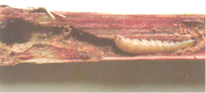
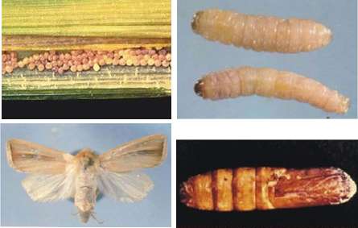

| Home |
| SORGHUM |
| 1. Sorghum Shootfly |
| 2. stem borer |
| 3. pink stem borer |
| 4. shoot bug |
| 5. earhead bug |
| 6. sorghum midge |
| 7. plant lice (Aphids) |
| 8. earhead web worm |
| 9. gram caterpiller |
| 10. plant bug |
| 11. stink bug |
| 12. mirid bug |
| 13. slug caterpiller |
| 14. Leaf roller |
| 15. flea beetle |
| 16. red hairy caterpiller |
| 17. semilooper |
| 18. weevils |
| 19. wingless grasshopper |
| Integrated Pest Management |
| Questions |
| Download Notes |
PESTS OF SORGHUM :: Major Pests :: Pink Stem Borer
3. Pink stem borer: Sesamia inferens (Noctuidae: Lepidoptera)
Distribution and status: India, Pakistan, Malaysia, Taiwan, Burma, Bangladesh, Sri Lanka, South East Asia, China, Korea, Japan and Indonesia. Damage symptoms: The pink larva bores into the stem and damages the central shoot resulting in dead heart. |
 |

|
Bionomics: The adult moth is fawn-colored, with dark brown streaks on the fore wings and white hind wings. The female lays about 150 creamy-white and hemispherical eggs that are arranged in two or three rows between the leaf sheath and the stem of the host plant. Egg period 7 days. The fully grown larvae measures about 25 mm and is pale yellow with a purple pink tinge and a reddish-brown head. The larval period 25 days but in cold months it may be extended to 75 days. Pupation occurs in the larval tunnel in the stem and the adult emerges in 12 days. One generation may take 6-7 weeks. The life cycle is completed in 45-75 days. There are 4-6 generations per year. |
Management
- Release egg parasitoids: Telenomus sp., Trichogramma chilonis; Larval parasitoids: Apanteles flavipes, Bracon hebetor; Pupal parasitoid: Tetrastichus ayyari
- Spray endosulfan 35 EC @ 1 L/ha or chlorpyriphos 20 EC 1.0 L / ha or apply carbofuran 3 G @ 25 kg/ ha or cartap hrdrochloride 4 G @18.75 kg/ha at every 20 days interval after germination of the crop.